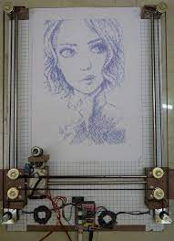

Idea:
The project idea was a cnc drawing machine. Where the user would have a simple device inside a box with a button. This device has a camera integrated in the casing, when the user pushes the button the camera snaps an image and sends it to the cnc drawing machine after applying some image processing techniques. The cnc drawing machine (one like in the image) then asks permission from the user to start drawing (for saftey purposes), when the permission is give the machine starts drawing the image.
Image processing:
The purpose of this step was to capture the image and start processing it so that the final product is a gcode which is sent to the machine. What i wanted to do is have the processing done in the box with ESP but life doesn't always go as planned üò¢. So far i could't find a way to do so. Therefore i started searching on how to image process on the PC, where the image wouldbe sent to the PC from the box to be processed and after that sent to the machine from the PC.
After some research inkscape was the application i decided to use for this task. After downloading the application i followed this tutorial to install the library used in the inkscape to convert the image to gcode. After that i then followed this tutorial to convert the image into gcode. After trying various values i decided to go with 0.295 and this may vary according to the image

Well, everything went smooth so far. Which was kinda weird, but what i didn't know was that was the calm before the storm üò¢. The app showed the following error. And because the library was old and had no support whatsoever, i could't solve the problem so that was a bummer.

After some other research i found some app that converts an image into a gcode. However, the app works by just uploading the image and then downloading the gcode which sounds a bit fishy as i can't see any feedback from the application before downloading the file, so i'm leaving this app as the last option.


Until i find some solution to this issue i'm stuck here ‚òπÔ∏èüíî.